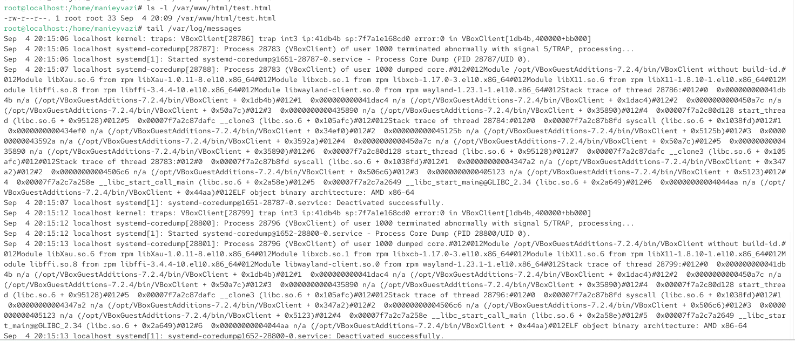
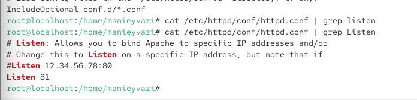
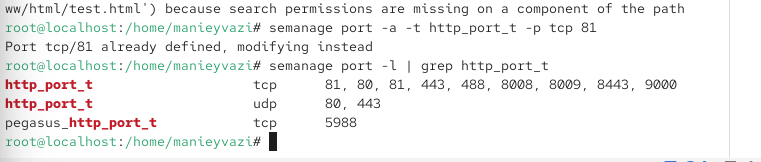
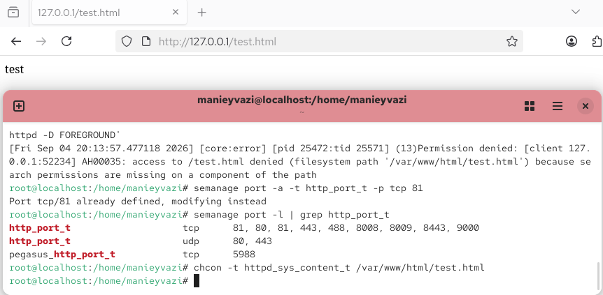
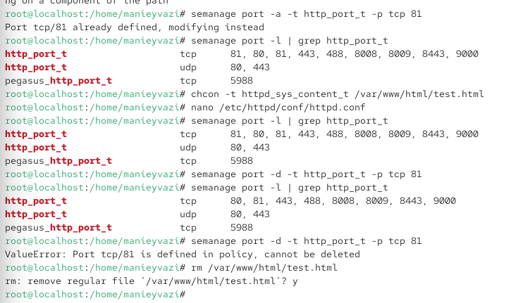

06.октябрь.2026
Технология SELinux
Развить навыки администрирования ОС Linux. Получить первое практическое знакомство с технологией SELinux. Проверить работу SELinux на практике совместно с веб-сервером Apache.
Команда getenforce показала, что SELinux работает в режиме Enforcing. Команда sestatus подтвердила, что SELinux включён (status: enabled), используется политика targeted, текущий режим — enforcing. Это соответствует требованиям лабораторной работы.

Рис. 1 — Проверка режима работы SELinux
Веб-сервер Apache активен (active (running)), загружен и работает. В выводе также отображаются основные процессы httpd и их идентификаторы. Это означает, что веб-сервер готов к работе.

Рис. 2 — Проверка статуса веб-сервера Apache
В выводе видно, что процессы httpd запущены в контексте безопасности system_u:system_r:httpd_t:s0. Это означает, что процессы веб-сервера работают в домене httpd_t, который имеет ограниченные права в соответствии с политикой SELinux. Также в выводе присутствуют процессы, запущенные в контексте unconfined_u:unconfined_r:unconfined_t:s0, что связано с работой служебных утилит.

Рис. 3 — Определение контекста безопасности процессов Apache
Она показала статистику по политике: количество классов, разрешений, типов, пользователей, ролей, логических выражений и т.д. Например, типов — 4699, пользователей — 8, ролей — 15.

Рис. 4 — Это демонстрирует масштаб политики SELinux.
В выводе отображаются файлы и поддиректории с их SELinux-контекстами. Это позволяет понять, какие типы присвоены объектам в данной директории.(Определение типов файлов в директории /var/www)

Рис. 5 — Получение статистики по политике SELinux
Директория пуста, поэтому выведено только total 0. Это означает, что на момент проверки в ней не было файлов.

Рис. 6 — Определение типов файлов в директории /var/www/html

Рис. 7 — Создание тестового HTML-файла
Файл test.html получил контекст unconfined_u:object_r:httpd_sys_content_t:s0. Тип httpd_sys_content_t позволяет процессу httpd получить доступ к файлу. Это объясняет, почему файл должен отображаться через веб-сервер.

Затем командой cat проверено его содержимое.Проверка контекста созданного файла*
Файл успешно отображён, на странице виден текст «test». Это подтверждает, что SELinux не блокирует доступ, так как контекст файла соответствует типу httpd_sys_content_t.

Рис. 9 — Проверка доступа к файлу через веб-сервер
Затем командой ls -Z проверен новый контекст: unconfined_u:object_r:samba_share_t:s0. Тип samba_share_t не предназначен для httpd, поэтому доступ должен быть запрещён.

Рис. 10 — Изменение контекста файла на samba_share_t
Получена ошибка 403 Forbidden — «You don’t have permission to access this resource». Это произошло потому, что SELinux запретил процессу httpd доступ к файлу с типом samba_share_t, хотя обычные права доступа (rw-r–r–) позволяли чтение.

Рис. 11 — Проверка доступа к файлу после смены контекста
В системном логе видно, что SELinux зафиксировал отказ в доступе. Это подтверждает, что политика SELinux активно работает и блокирует нежелательные обращения.

Рис. 12 — Анализ логов
Команда grep Listen показывает, что теперь Apache настроен на порт 81.

Рис. 13 — Изменение порта прослушивания Apache на 81
Затем командой semanage port -l | grep http_port_t проверено, что порт 81 добавлен в список разрешённых для http_port_t. Это необходимо, чтобы SELinux позволил Apache использовать порт 81.

Рис. 14 — Добавление порта 81 в политику SELinux
Файл успешно отображён. Это доказывает, что SELinux контролирует не только типы файлов, но и сетевые порты.

Рис. 15 — Проверка доступа к файлу через порт 81
При попытке удаления порта 81 получена ошибка ValueError: Port tcp/81 is defined in policy, cannot be deleted. Это означает, что порт 81 уже был определён в политике по умолчанию, поэтому его нельзя удалить. Файл test.html успешно удалён.

Рис. 16 — Удаление привязки порта 81 и файла test.html
В ходе лабораторной работы были изучены основы администрирования SELinux в Linux. Было подтверждено, что SELinux работает в режиме enforcing с политикой targeted. На практике проверено, что SELinux контролирует доступ процессов к файлам на основе контекстов безопасности, а также управляет сетевыми портами. Изменение контекста файла на несоответствующий тип приводит к блокировке доступа, даже если стандартные права доступа разрешают чтение. Добавление порта в политику SELinux позволяет веб-серверу использовать нестандартный порт. Таким образом, SELinux является мощным механизмом мандатного разграничения доступа, который дополняет дискреционные права и повышает безопасность системы.